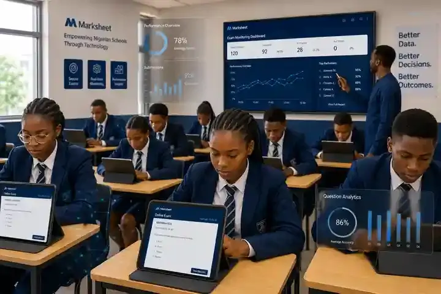

10 Best Exam Software for Schools in Nigeria (2026): Tested & Compared
Explore the leading exam software solutions in Nigeria . Marksheet offers secure, efficient, and reliable platforms for students and schools nationwide.

The short answer
If you run a Nigerian secondary school and need exam software this term, here is the honest summary:
- Best all-in-one (exams + results + report cards): Marksheet — from ₦35,000/month. The only option here that carries a student from syllabus through AI-assisted grading to verified report cards on one platform.
- Best for large schools and CBT centres: FlexiSAF Distinction — about $2/student/month for institutions; a free practice platform (distinction.ng) for students.
- Best fully offline CBT: iTechSlidesHub CBT — ₦350,000 promo (regular ₦650,000), runs without internet.
- Best anti-cheat feature set: ELITE DIGITALCLASS CBT Universe — from ₦55,000/year.
- Best budget buy: CBTflux — ₦40,000 one-time, never expires.
Everything below explains how we reached these picks, what each product actually does, what it costs in naira, and where each one falls short — including ours.
────────────────────────────────────────────────────────────
How we evaluated (methodology)
We reviewed eleven exam and CBT platforms serving Nigerian schools in September 2026, using each vendor's website, published pricing, demo videos, and public user discussions (including Nairaland threads where school owners compare notes). Prices below are quoted in naira as published by the vendors and dated — verify before you buy, because promos change.
One disclosure, stated plainly: this guide is published by the Marksheet team, and Marksheet is one of the products reviewed. We have not ranked ourselves #1 by default; each "best for" pick names the situation where that product genuinely wins, and every review — including ours — lists real limitations. If you catch anything outdated, tell us and we will correct it.
What "best" means here: software a Nigerian school can actually deploy this term — WAEC/NECO-aligned questions, objective + theory marking, result processing, and pricing a proprietor can verify. Pure JAMB-practice apps with no school exam features are noted separately, not ranked as school exam software.
────────────────────────────────────────────────────────────
Comparison table: all 11 at a glance
| Product | Best for | Works offline | Starting price | Free option |
|---|---|---|---|---|
| Marksheet | All-in-one: exams → verified report cards | LAN-based exam delivery | ₦35,000/month per school | No |
| FlexiSAF Distinction | Large schools, AI-generated questions | No (cloud) | ~$2/student/month (institutions) | Yes (distinction.ng practice) |
| iTechSlidesHub CBT | Fully offline CBT exams | Yes | ₦350,000 (promo; reg. ₦650,000) | No |
| ELITE DIGITALCLASS CBT Universe | Anti-cheat + parent SMS alerts | Yes | ₦55,000/year (50 students) | No |
| CBTflux (Fluxtech) | Tight budgets, one-time purchase | Yes (desktop) | ₦40,000 one-time | Demo |
| Edves | School management + CBT in one | Partial | Contact vendor | No |
| SchoolViewers | Trying before committing | No (cloud) | Free Starter (100 students) | Yes |
| TestDriller | JAMB/UTME practice focus | Yes (app) | Contact vendor | Limited |
| ExcelMind | School portal with CBT module | No (cloud) | Contact vendor | No |
| Sidmoses CBT | Low-cost CBT setup | Yes | Contact vendor | No |
| Sabi Examiner | Zero-budget start | No (cloud) | Free | Yes |
*Prices as published by vendors, verified September 2026. "Contact vendor" means no public school pricing was available at the time of writing.*
────────────────────────────────────────────────────────────
The 11 products, reviewed honestly
1. Marksheet — best all-in-one (syllabus to verified report card)
Marksheet is the platform this blog belongs to, so read this review with that in mind — and hold us to the same standard as the rest.
What it does: Covers the full academic cycle, not just exam day: curriculum/syllabus setup, lesson notes, continuous assessment, CBT-style exams delivered over the school's LAN (no internet needed during the exam), AI-assisted grading, result compilation, report cards, and instant online verification of results.
Key features:
- LAN-based exam delivery — exams run even with zero internet
- Objective + theory questions, WAEC/NECO-aligned
- AI-generated questions, lecture notes, and quizzes from a topic prompt or pre-generated lesson notes
- Automated grading with instant feedback
- AI-assisted grading and instant result analysis
- Bulk student registration and bulk question import
- Live exam monitoring and anti-malpractice monitoring
- 18 modules covering attendance, fees, and records alongside exams
- CBT exams inside a complete school management system
- Parent mobile app with notifications and result viewing
- Timetable, attendance, and HR modules
- Online result verification portal
Pricing: From ₦35,000/month per school, or ₦100,000/term per school (as published on marksheet.top, September 2026).
Honest limitations: It is a subscription, so the cost never ends — a one-time-license product like CBTflux is cheaper over three years. It is also the newest platform on this list, so its track record is shorter than FlexiSAF's or Edves'. If you only need exam-day software and already have a school management system, you are paying for modules you won't use.
Best for: Schools that want one system from syllabus to verified report card, especially where internet is unreliable.
────────────────────────────────────────────────────────────
2. FlexiSAF Distinction — best for large schools and AI-powered assessment
FlexiSAF is one of Nigeria's most established edtech companies (Abuja-based), and Distinction is its AI-driven learning and assessment platform. In 2026 it partnered with AWS to scale AI-generated questions and automated grading, reporting over a million AI-generated questions and millions of answered questions within its first year.
Key features:
- AI-generated questions, lecture notes, and quizzes from a topic prompt
- Automated grading with instant feedback
- Personalised learning paths per student
- Analytics dashboards for teachers and administrators
Pricing: Institutional licensing reported at approximately $2/student/month (July 2026 press coverage). The student practice platform at distinction.ng is free.
Honest limitations: It is cloud-based — no internet, no exams. Pricing is in dollars, which exposes schools to exchange-rate movement. It is strongest for larger institutions; a 200-student secondary school may find the per-student maths less attractive than a flat-fee offline product.
Best for: Large schools, school groups, and tertiary institutions that want AI-assisted assessment at scale.
────────────────────────────────────────────────────────────
3. iTechSlidesHub CBT — best fully offline CBT
A purpose-built, fully offline computer-based testing system marketed heavily to Nigerian schools and CBT centres, with demo videos ranking on page one of Google for this exact keyword.
Key features:
- 100% offline — no internet required at any point
- Objective (auto-marked), theory, fill-in-the-blank, true/false questions
- Bulk student registration and bulk question import
- Live exam monitoring and anti-malpractice monitoring
- Report card generation and fast result processing
Pricing: ₦350,000 promotional price (regular ₦650,000), advertised on the vendor's YouTube channel in September 2026.
Honest limitations: It is exam software, not a school management system — no fees, attendance, or lesson notes. Promo pricing creates urgency but means you should confirm the current price before budgeting. Support responsiveness for a smaller vendor is worth testing during the demo period.
Best for: Schools and CBT centres that need reliable offline exams and nothing else.
────────────────────────────────────────────────────────────
4. ELITE DIGITALCLASS CBT Universe — best anti-cheat feature set
An offline-first school examination system with the most aggressive anti-malpractice marketing on this list — and features to back some of it up.
Key features:
- Three-layer anti-cheat: screen lock, tab-switch detection, camera ID verification (student selfie before the exam)
- Instant auto-marking with PDF report cards in seconds
- Automatic parent SMS notification on submission (name, subject, score, grade)
- Teachers upload their own questions via Word/Excel bulk import
- Exam scheduling calendar; Hausa, Igbo, and Yoruba language support
- Hardware-locked licensing per computer
Pricing (published on the vendor's YouTube, August 2026): Lite ₦55,000/year (50 students) · Standard �₦115,000/year (250 students) · Professional ₦235,000/year (1,000 students) · Universe ₦595,000/year (unlimited). Also pay-per-term (₦30,000/term) and pay-per-student (₦2,500/student) options.
Honest limitations: Hardware-locked licensing means a dead computer can mean a licensing headache — clarify the reactivation policy before paying. The feature list is long; smaller schools should check which features actually work in the Lite edition versus the top tier.
Best for: Schools where exam malpractice is the #1 concern and parents expect instant result notification.
────────────────────────────────────────────────────────────
5. CBTflux (Fluxtech Concepts) — best budget buy
A straightforward CBT and examination software from Fluxtech Concepts with the simplest pricing on this list.
Key features:
- Unlimited students and unlimited questions
- Student photo display during exams (anti-impersonation)
- Optional result display, retake controls, timed exams
- Can be installed on the school's website as an online exam platform; mobile responsive
- Video tutorials and PDF documentation included
Pricing: ₦40,000 one-time payment, unlimited licence, never expires (fluxtechng.com, verified September 2026).
Honest limitations: A one-time licence often means limited long-term support and updates — confirm what support is included. The interface is functional rather than modern. It handles exams only, not broader school management.
Best for: Small schools with tight budgets that want to buy once and own it.
────────────────────────────────────────────────────────────
6. Edves — best school management suite with CBT
Edves is a well-known Nigerian school management platform (Lagos) used by hundreds of schools, bundling CBT/examination modules inside a full suite: admissions, fees, attendance, timetable, and parent communication.
Key features:
- CBT exams inside a complete school management system
- Parent mobile app with fee payment and result viewing
- Timetable, attendance, and HR modules
Pricing: Not published — contact the vendor for a school quote.
Honest limitations: You cannot buy the CBT module alone; it comes with the whole suite and its price tag. Unpublished pricing means budgeting requires a sales conversation.
Best for: Schools that want to digitise everything at once, not just exams.
────────────────────────────────────────────────────────────
7. SchoolViewers — best free way to start
A cloud school management platform with a genuinely free Starter tier (up to 100 students), which makes it the lowest-risk way to test digital exams.
Key features:
- Free Starter tier for up to 100 students
- Exams/CBT alongside fees, attendance, and records
- Cloud-based — accessible anywhere with internet
Pricing: Free Starter (100 students); paid tiers for larger schools (contact vendor).
Honest limitations: The free tier caps at 100 students — most secondary schools will outgrow it. Cloud-only means exams depend on internet connectivity. Advanced exam features (anti-cheat, offline mode) are thinner than the CBT specialists above.
Best for: Small or new schools that want to start digitising at zero cost.
────────────────────────────────────────────────────────────
8. TestDriller — best for JAMB/UTME practice
TestDriller is a long-running Nigerian CBT practice app focused on JAMB UTME, WAEC, and NECO preparation, with offline practice modes.
Key features:
- Large bank of past JAMB/WAEC/NECO questions with explanations
- Offline practice on Windows and Android
- Timed mock exams simulating real CBT conditions
Pricing: Contact vendor; limited free access available.
Honest limitations: It is a student practice tool, not school exam software — teachers cannot set their own school exams, manage classes, or process term results on it. Included here because many schools buy it alongside real exam software for final-year students.
Best for: JAMB/UTME prep for SS3 students, as a complement to — not a replacement for — school exam software.
────────────────────────────────────────────────────────────
9. ExcelMind — school portal with CBT module
A Nigerian school portal platform combining CBT exams with result management, school websites, and parent communication.
Key features:
- CBT exams and online assignments
- Result checking portal for parents
- School website integration
Pricing: Contact vendor for school pricing.
Honest limitations: Public information on features and pricing is thin — insist on a live demo with your own questions before committing. Smaller vendor footprint than Edves or FlexiSAF.
Best for: Schools that want a public-facing portal (website + results) bundled with exams.
────────────────────────────────────────────────────────────
10. Sidmoses CBT — low-cost CBT setup
A smaller Nigerian vendor offering CBT software installation and setup for schools, often bundled with CBT centre setup services.
Key features:
- Offline CBT exam delivery
- Setup and installation support for school computer labs
Pricing: Contact vendor.
Honest limitations: Limited public documentation and fewer verifiable school deployments than the bigger names. Treat the demo as mandatory, not optional.
Best for: Schools that need hands-on setup help with their first CBT lab.
────────────────────────────────────────────────────────────
11. Sabi Examiner — free exam tool
A free online examination tool aimed at teachers and small schools for creating and administering simple tests.
Key features:
- Free to use
- Quick test creation and sharing
Pricing: Free.
Honest limitations: Feature depth is far below the paid options — no serious anti-cheat, no offline mode, no report-card pipeline. Fine for class quizzes; not for term examinations.
Best for: Individual teachers running class tests at zero budget.
────────────────────────────────────────────────────────────
How to choose: a 5-minute buyer's guide
Start with your internet situation. If your school's internet is unreliable, eliminate every cloud-only option immediately. Your shortlist becomes: Marksheet (LAN exams), iTechSlidesHub, ELITE CBT, CBTflux, Sidmoses. This single filter removes half the list.
Then match the job to the tool:
- *Exam day only, tight budget* → CBTflux (₦40,000 once) or ELITE Lite (₦55,000/year)
- *Exam day only, malpractice is the fear* → ELITE CBT (anti-cheat stack + parent SMS)
- *Exams plus full school records* → Marksheet (₦35,000/month) or Edves (quote)
- *Large school, AI-assisted everything* → FlexiSAF Distinction
- *Just testing the waters* → SchoolViewers free tier
Always do these three things before paying:
- Run a real mock exam with your own questions and at least one full class — not the vendor's demo data.
- Kill the internet mid-exam (if offline is claimed) and confirm exams continue.
- Ask for two reference schools you can call — not testimonials on a website, actual phone numbers.
────────────────────────────────────────────────────────────
Frequently asked questions
What is the best exam software for schools in Nigeria?
There is no single best — it depends on the job. For an all-in-one system (exams through verified report cards), Marksheet (from ₦35,000/month) is the strongest fit. For pure offline CBT, iTechSlidesHub (₦350,000 promo) and ELITE CBT (from ₦55,000/year) lead. For the lowest cost, CBTflux costs ₦40,000 once.
How much does exam software cost in Nigeria?
From free (Sabi Examiner, SchoolViewers Starter) to ₦40,000 one-time (CBTflux), ₦55,000–₦595,000/year (ELITE CBT), ₦350,000 (iTechSlidesHub promo), and from ₦35,000/month (Marksheet). Always confirm current prices — promos change.
Can exam software work without internet?
Yes. Marksheet (LAN-based), iTechSlidesHub, ELITE CBT, CBTflux, and Sidmoses all run exams offline. Cloud platforms like FlexiSAF Distinction, SchoolViewers, and Sabi Examiner require internet.
Does exam software stop cheating?
It reduces it; nothing eliminates it. The strongest anti-cheat on this list is ELITE CBT (screen lock, tab detection, camera ID verification). Question shuffling, timers, and photo verification (CBTflux) are standard elsewhere. Physical invigilation still matters.
Which exam software is WAEC/NECO aligned?
Marksheet, FlexiSAF Distinction, iTechSlidesHub, and TestDriller all support WAEC/NECO-aligned or past-question content. Confirm syllabus alignment for your specific subjects during the demo.
Is free exam software good enough for a school?
For class quizzes, yes (Sabi Examiner). For official term exams with hundreds of students, free tools lack anti-cheat, offline reliability, and result processing — budget at least ₦40,000–₦55,000 for the real thing.
Should a school buy CBT software or a full school management system?
If exams are the only pain point, buy CBT software (cheaper, simpler). If results processing, fees, and attendance are also manual, a suite like Marksheet or Edves replaces several problems at once — compare the combined cost honestly.
How long does it take to set up exam software?
Typically 1–3 weeks including question upload, staff training, and a mock exam. Offline products needing lab installation take longer than cloud sign-ups. Never deploy for the first time on a real exam day.
────────────────────────────────────────────────────────────
Our recommendation
If you want the full journey — syllabus, lesson notes, CA, exams, AI-assisted grading, and report cards parents can verify online — that is what we built Marksheet for, and we will happily show it to you on your own school's data.
Book a free demo — we will run a mock exam with your questions, on your terms, before you pay anything.
────────────────────────────────────────────────────────────
*Published by the Marksheet Editorial Team. Prices verified September 2026 from vendor websites and official channels; confirm before purchase. This guide is updated quarterly — last update: September 2026.*
See a full term run in 25 minutes
We’ll set up a session live, run a mock exam and publish a verified report card using your own class structure. A real walkthrough, not a slide deck.